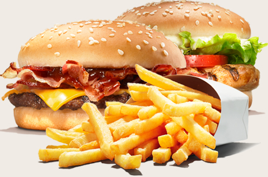

Home
Burger

Description
Here's a simple and delicious Vietnamese-style beef burger recipe — you can make it
classic Western-style, or add a Vietnamese twist with pickled veggies and fish sauce.
Ingredients
- 1 kg beef shank or brisket
- 500 g pork hock or pork leg (optional)
- 2 cloves garlic (minced)
- 1 tsp black pepper
- 4 burger buns (toasted)
Steps
- Make the burger patties
- Cook the patties
- Toast the buns
- Assemble the burger
More recipes